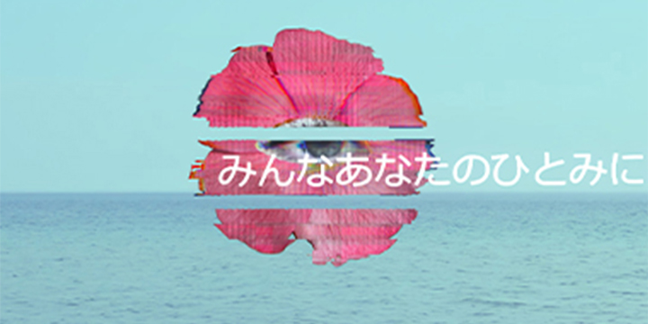
1999年8月32日
LOST FOOTAGE [1998]
『つくる』をあそぶ、
ちいさな秘密基地。
WEB / DESIGN PORTFOLIO

大学でデザインコースを専攻し、現在はWebデザイナーとして修行・実践中です！
ただおしゃれやかわいいだけではなく、
「情報がすんなり届く、ストレスなくちゃんと見れるサイトづくり」を大切に、Webサイトやバナー、ロゴ、キャラクター制作に取り組んでいます。
【好きなもの・インスピレーション】


LOST FOOTAGE [1998]

Video Production & Sound Design
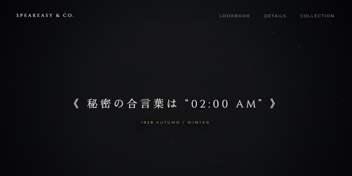
Web Design & Frontend
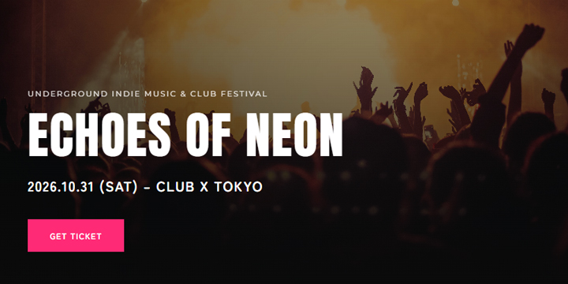
Event LP, Branding & UIUX Design
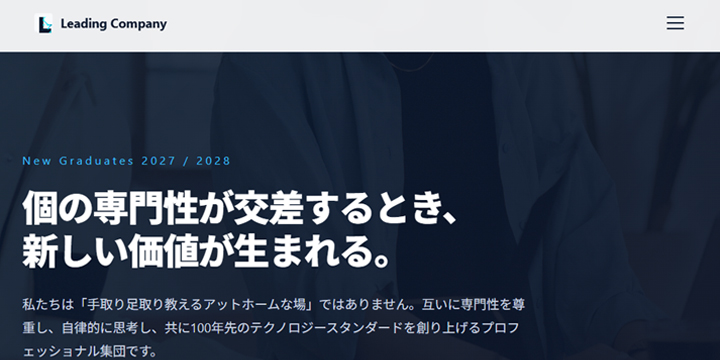
コーポレート・採用統合 / ブランド戦略・UIUX設計
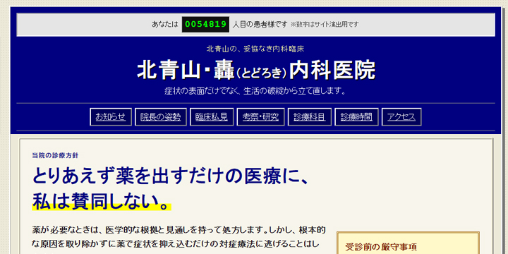
Clinic Branding & 90s Retro Web
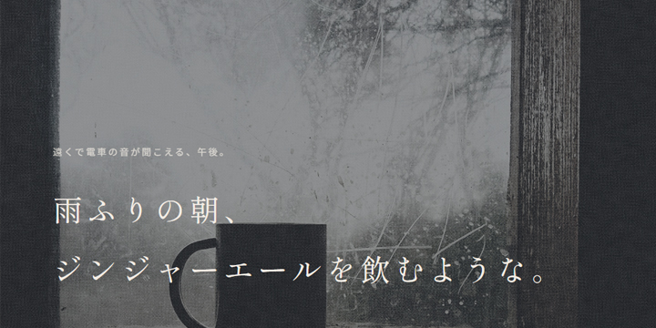
Minimal Essay & Gallery Site
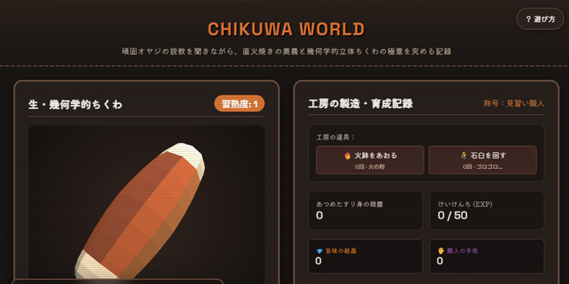
Low-Poly Chikuwa Simulation
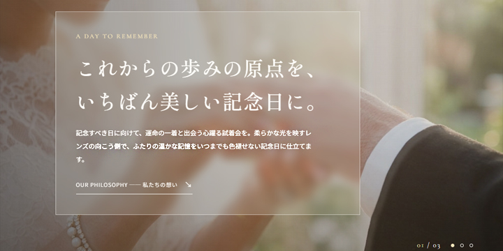
Wedding Photo Studio Website
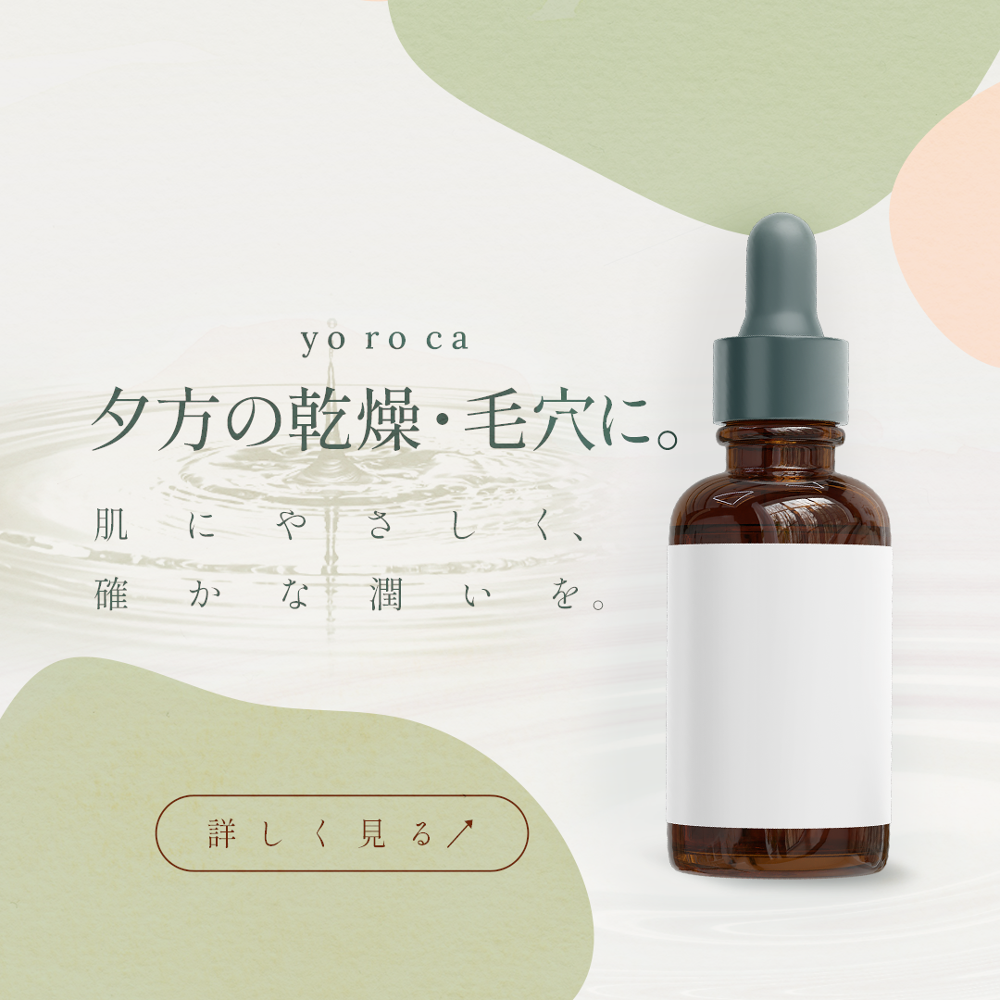
Banner Design (2 Tones & Sizes)
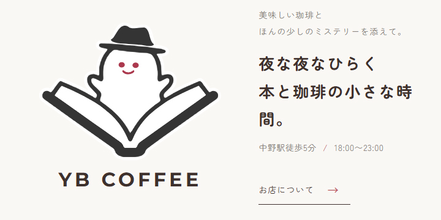
Web Design & Figma Challenge
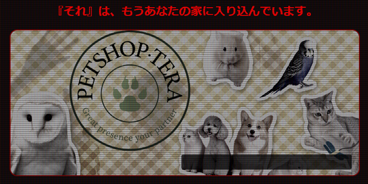
Web Design & Horror Game Spinoff
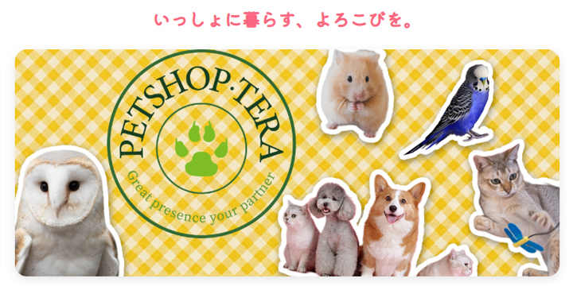
Web Design
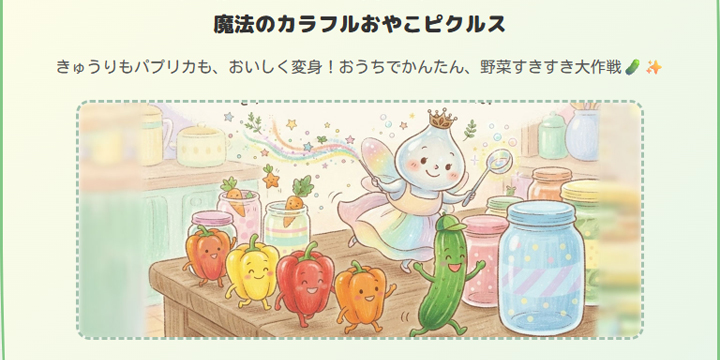
Food Education LP & Branding
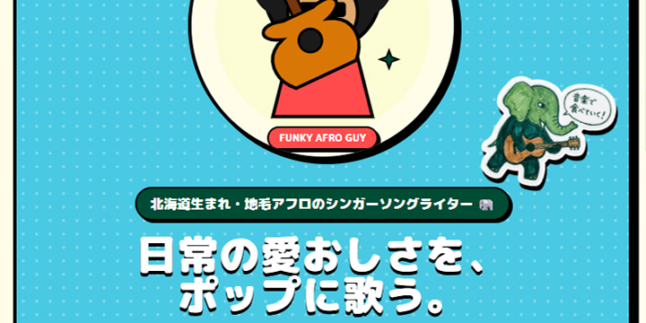
Web Design & Branding
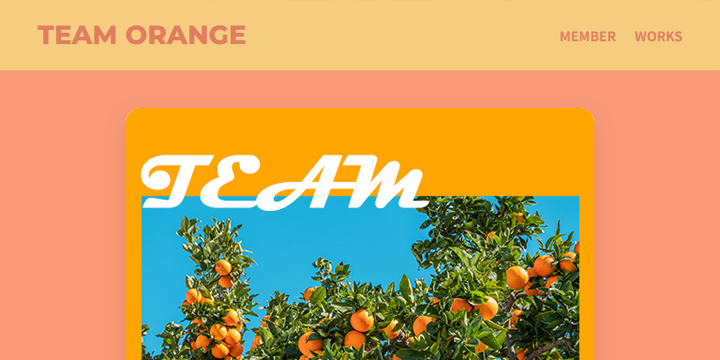
Team Project / Case Study
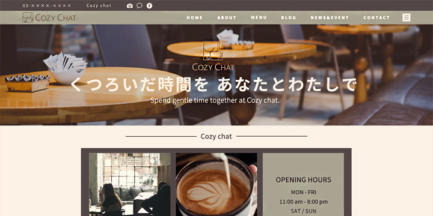
Web Design & Case Study
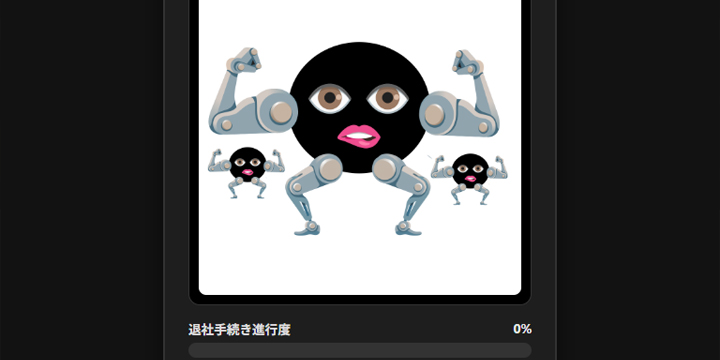
Interactive Web & Game

Character & Package Design
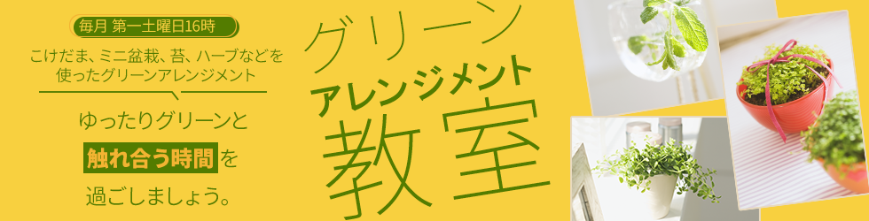
Banner Design (A/B Pattern)
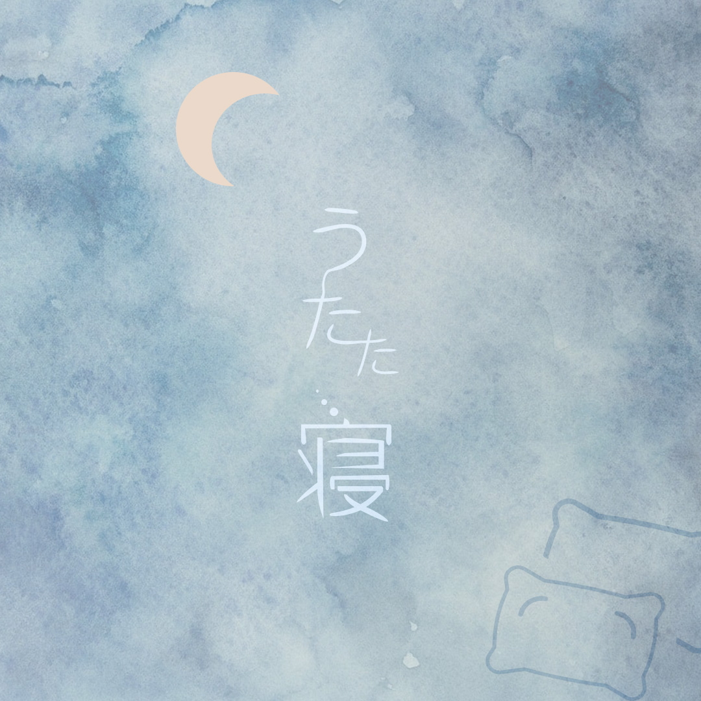
Typography & Graphic
Promotion Sticker Typography
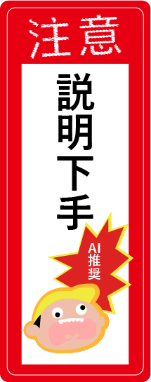
Warning Sticker Graphic
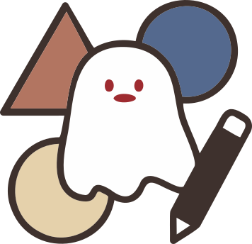